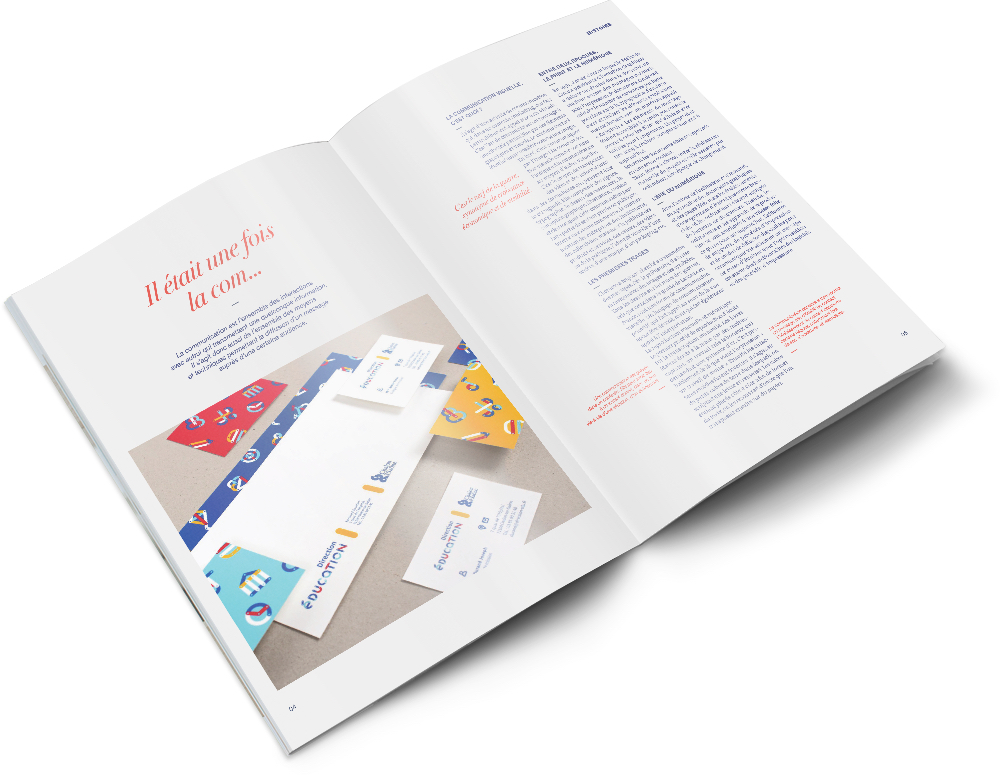

<!DOCTYPE html>
<html lang="en">
  <head>
    <meta charset="UTF-8"/>
    <meta name="viewport" content="width=device-width, initial-scale=1.0"/>
    <meta http-equiv="X-UA-Compatible" content="ie=edge"/>
    <meta property="og:title" content="Nicolas &quot;0swin&quot; Roger - Portfolio"/>
    <meta property="og:type" content="website"/>
    <meta property="og:url" content="https://0sw.in/"/>
    <meta property="og:image" content="https://0sw.in/hrsrc/pictures/opengraphimage.jpg"/>
    <meta property="og:image:width" content="1200"/>
    <meta property="og:image:height" content="628"/>
    <meta property="og:description" content="Étudiant de 18 ans en deuxième année de direction artistique à e-artsup, je m'intéresse notamment au web, au design interactif et au motion design."/>
    <meta property="fb:app_id" content="966242223397117"/>
    <meta name="twitter:card" content="summary_large_image"/>
    <meta name="twitter:title" content="Nicolas &quot;0swin&quot; Roger - Portfolio"/>
    <meta name="twitter:description" content="Étudiant de 18 ans en deuxième année de direction artistique à e-artsup, je m'intéresse notamment au web, au design interactif et au motion design."/>
    <meta name="twitter:url" content="https://0sw.in/"/>
    <meta name="twitter:image" content="https://0sw.in/rsrc/pictures/opengraphimage.jpg"/>
    <link rel="stylesheet" href="https://0sw.in/css/reset.min.css"/>
    <link rel="stylesheet" href="https://0sw.in/css/bootstrap.css"/>
    <link rel="stylesheet" href="https://0sw.in/css/app.css"/>
    <link rel="stylesheet" href="//fonts.googleapis.com/css?family=Montserrat"/>
    <title>Nicolas "0swin" Roger</title>
  </head>
</html>
<body>
  <div class="navbar navbar-dark fixed-top navbar-expand-lg">
    <div class="navbar-header"><a class="navbar-brand js-scroll-trigger" href="https://0sw.in/index.html#">oswin</a></div>
    <button class="navbar-toggler" type="button" data-toggle="collapse" data-target="#navbarText" aria-controls="navbarText" aria-expanded="false" aria-label="Toggle navigation"><span class="navbar-toggler-icon"></span></button>
    <div class="collapse navbar-collapse" id="navbarText">
      <div class="navbar-centered-content">
        <menu class="navbar-nav mr-auto">
          <li class="nav-item js-scroll-trigger"><a class="nav-link js-scroll-trigger" href="https://0sw.in/index.html#">Accueil</a></li>
          <li class="nav-item js-scroll-trigger"><a class="nav-link js-scroll-trigger" href="https://0sw.in/index.html#projets">Projets</a></li>
          <li class="nav-item js-scroll-trigger"><a class="nav-link js-scroll-trigger" href="https://0sw.in/index.html#a-propos">À propos</a></li>
        </menu>
      </div>
      <ul class="navbar-nav">
        <li class="nav-item"><a class="nav-link fa fa-github fa-pad-top" href="https://github.com/0swin" target="_blank"></a><a class="nav-link fa fa-instagram fa-pad-top" href="https://www.instagram.com/heyits0swin/" target="_blank"></a><a class="nav-link fa fa-vimeo fa-pad-top" href="https://vimeo.com/0swin" target="_blank"></a><a class="nav-link fa fa-linkedin fa-pad-top" href="https://www.linkedin.com/in/nicolas9roger/" target="_blank"></a></li>
      </ul>
    </div>
  </div>
  <div id="project-banner" style="background: linear-gradient(rgba(0, 0, 0, 0.3), rgba(0, 0, 0, 0.4)), url('img/thumbnail.jpg')">
    <div class="text">
      <h1 class="display-4">IN</h1>
      <h2>Et si le digital sauvait le&nbsp;print ?</h2>
    </div>
  </div>
  <div id="project-tags">
    <div class="container">
      <div class="row pt-3">
        <div class="col-md pb-2">
          <ul>
            <li><b>Projet</b></li>
            <li>Édition print</li>
            <li>Projet scolaire</li>
          </ul>
        </div>
        <div class="col-md pb-2">
          <ul>
            <li class="pb-1"> <b>Outils</b></li>
            <li>Adobe Illustrator</li>
            <li>Adobe Photoshop</li>
            <li>Adobe InDesign</li>
          </ul>
        </div>
        <div class="col-md pb-2">
          <ul>
            <li class="mb-1"><b>Collègues</b></li>
            <li><a href="https://www.behance.net/Alixbarral">Alix Barral</a></li>
            <li><a href="http://gladyspichollet.com/">Gladys Pichollet</a></li>
            <li><a href="https://www.behance.net/valentinvi5e22">Valentin Vildart</a></li>
            <li>Jeremy Lepioufle</li>
            <li><a href="http://lematoux.com/">Mathilde Bourbon</a></li>
            <li><a href="http://mel-lun.ml">Mélissa Luntadila</a></li>
          </ul>
        </div>
      </div>
    </div>
  </div>
  <div id="project-content">
    <div class="container pt-4">
      <div class="row">
        <div class="col-md-1"></div>
        <div class="col-md-10">
          <p>Création d'un magazine sur le&nbsp;mariage entre le&nbsp;print et&nbsp;le&nbsp;digital.</p>
          <p>Le magazine présente des&nbsp;interactions lorsque les&nbsp;pages et la&nbsp;couverture sont scannées avec une&nbsp;application de&nbsp;réalité virtuelle. </p>
          <video loop="loop" muted="muted" autoplay="autoplay" preload="auto">
            <source src="img/animation.mp4" type="video/mp4"/>
          </video>
        </div>
      </div>
    </div>
  </div>
</body>
<script src="https://code.jquery.com/jquery-3.2.1.slim.min.js" integrity="sha256-k2WSCIexGzOj3Euiig+TlR8gA0EmPjuc79OEeY5L45g=" crossorigin="anonymous"></script>
<script src="https://cdnjs.cloudflare.com/ajax/libs/popper.js/1.11.0/umd/popper.min.js" integrity="sha384-b/U6ypiBEHpOf/4+1nzFpr53nxSS+GLCkfwBdFNTxtclqqenISfwAzpKaMNFNmj4" crossorigin="anonymous"></script>
<script src="https://0sw.in/js/bootstrap.min.js"></script>
<script src="https://use.fontawesome.com/4ca25aadf9.js"></script>